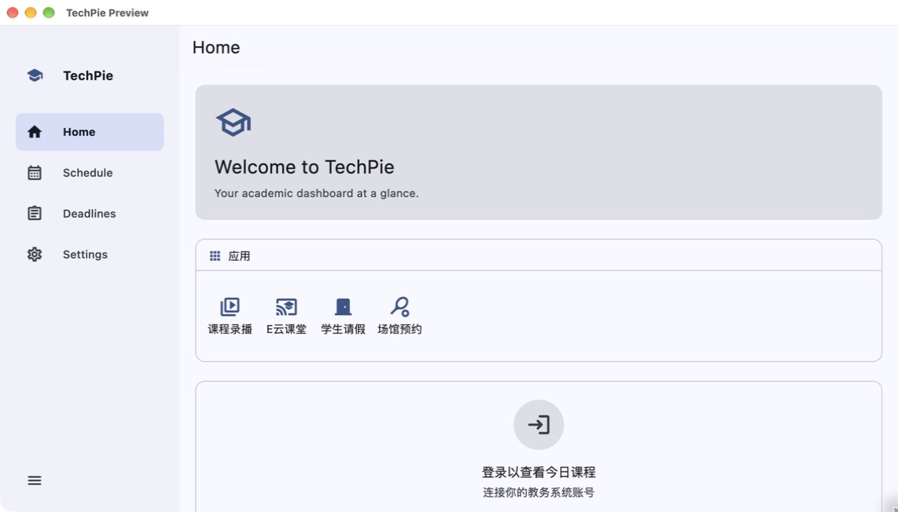

01
课表
按周查看上课安排。课程时间与地点集中呈现，随手找到下一节。
02
截止时间
把已连接课程平台的任务放到一起，减少反复打开平台查询。
03
校园入口
从同一处进入常用校园服务。依照需要，分别连接对应的账号。
Design
基于 Flutter 跨平台开发，在 iPhone、iPad 和 Mac 上保持一致的视觉语言，并为触控操作与桌面使用调整布局。
常用入口集中在首页，课程与待办各有清晰的位置。通过统一的字号、间距和色彩，让信息更容易扫读，也减少界面中的视觉干扰。